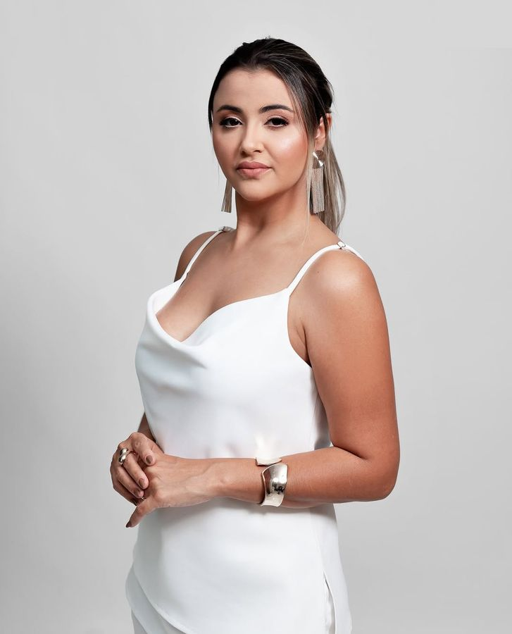
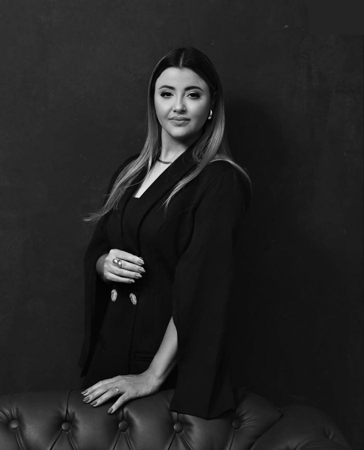
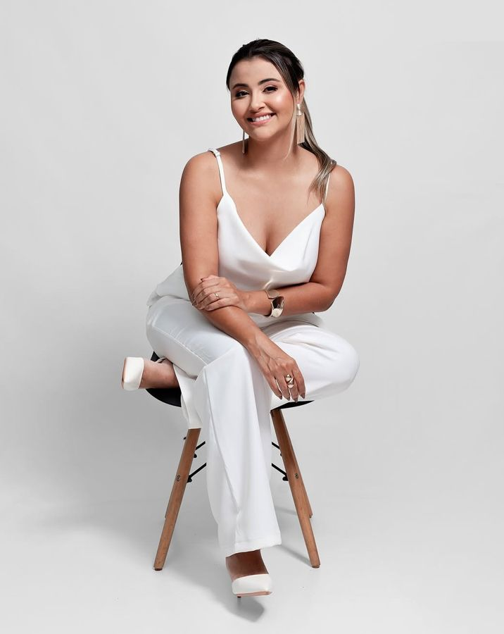

Lentes de resina
Lâminas de resina que corrigem cor, forma e alinhamento aparente, com mínimo ou nenhum desgaste. Também conhecidas como facetas de resina em Campo Grande.
Quero saber maisDra. Ariane Verlingue · Campo Grande - MS
Sou Ariane, cirurgiã-dentista com foco em odontologia estética. Desenho cada sorriso com planejamento individual e resina de alta performance, para um resultado natural que combina com o seu rosto.

Dra. Ariane Verlingue
Odontologia estética · Campo Grande - MS
Facetas de resina em Campo Grande feitas com mínimo desgaste, cor e textura naturais. Cada detalhe é esculpido e polido à mão para o sorriso parecer seu, só que melhor.
Quero o meuA Dra. Ariane Verlingue atua em Campo Grande - MS com foco em lentes de resina e odontologia estética. Cada sorriso é um projeto único: análise facial, harmonia entre os dentes, cor e textura naturais.
Seu método prioriza a preservação da estrutura dental e um resultado discreto, elegante e duradouro, longe de sorrisos padronizados.

Tratamentos estéticos com planejamento e acabamento artesanal.
Lâminas de resina que corrigem cor, forma e alinhamento aparente, com mínimo ou nenhum desgaste. Também conhecidas como facetas de resina em Campo Grande.
Quero saber maisClareamento, fechamento de espaços, correção de bordas e restaurações estéticas para um sorriso harmônico e natural.
Quero saber maisAvaliação completa da saúde bucal e do desenho do sorriso, para indicar o tratamento certo para o seu caso.
Quero saber maisVocê participa de todas as etapas: avaliação, desenho do sorriso, escolha da cor e ajustes finos. O objetivo é um resultado harmonioso e confortável no dia a dia.
Agendar avaliaçãoTransformações feitas na clínica da Dra. Ariane. Resultados variam conforme cada caso.
[Depoimento real do paciente 1]
[Depoimento real do paciente 2]
[Depoimento real do paciente 3]
Agende sua avaliação com a Dra. Ariane Verlingue em Campo Grande - MS.
Falar no WhatsApp